PRISMA, revisão geral: o canvas toca bem, mas não se acha nada nele
Revisão de 27/11/2026 em cima do branch dashboard-channels-output, sem mexer em nada. Seis frentes, cada achado com a medida no app, a técnica que o pegou e a fonte da pesquisa. Você escolhe embaixo de cada um; depois implemento em rodadas pequenas, com teste.
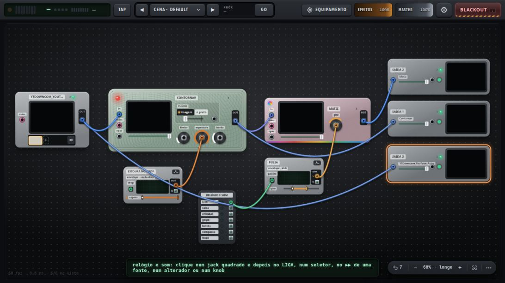
Aplicado em 27/11 (as recomendadas, em 8 rodadas)
Sem escolhas marcadas, valeram as recomendadas; cada rodada foi testada (gestos + self-checks) e entregue no app. Trocas de rota, com o motivo:
C5 cena = segurar a letra (Shift já é "na hora" na grade); C7 H = sempre tudo, G = o escolhido (Houdini);
B2 só a Espelho saiu (18 das 19 receitas de um átomo trazem um movimento: a lista diz "+ movimento"); B3 só o Fundo ficou oculto
(= Assunto invertido; os outros usam modelos ou entradas diferentes); R1 a semente ficou vazia com a dica (não há vídeo no git pra ir no pacote).
Ficaram pra rodadas próprias: F1, F6, F7, F8, o build novo, dividir o motor e o painel em pasta — ver o BACKLOG.md. Decisões: DECISOES.md.
O que está bom (e à frente dos concorrentes)
- Touchpad primeiro. Todo cabo é clique-pega/clique-solta, a roda sem Alt não gira controle e tolera 8 px de tremido. O VCV precisou de um módulo de terceiros (Clarity) pra isso.
- Cor do cabo = o que passa (imagem azul, sinal âmbar, evento verde) e estável, como no Bitwig Grid.
- Imagem viva em cada módulo + monitor do programa: o que o TouchDesigner tem e o VCV não.
- Fio recebe módulo e sacudir solta, os dois gestos do Blender e do Houdini, já feitos.
- Segurança do show: BLACKOUT com tampa e tecla, SOCORRO fixo, anti-estrobo. Nenhum dos editores de nós pesquisados tem isso pronto.
- Desempenho do canvas: 36 módulos a 60 fps, 2,2 ms de JS por quadro, no navegador sem GPU.
- Contrato do átomo escrito (
ATOMO.md) e a matriz que testa todo par.
O que está ruim
- Patch grande = cego. Sem busca no canvas e, de longe (20%), nenhum nome legível.
- Quatro listas pra pegar um módulo (roda, menu do cabo, "trocar", Equipamento › Biblioteca), a roda sem campo de busca à vista e o módulo da roda nasce solto: montar 3 módulos leva ~39 s pelo caminho que se descobre.
- Alvos pequenos: jack ≈ 18 px na tela a 68% (WCAG pede 24).
- Desfazer some ao trocar de cena e não tem refazer; uma letra põe cena no ar sem querer.
- Entrada de áudio: 100 controles crus, nomes em inglês e "rel/atk/mem"; sem ganho nem o sinal que o alterador recebe.
- Pixel map sem teste por bloco, sem exportar, sem preset da casa.
- Por dentro: a cena é migrada só pelo JS, cada kick com ação regrava o
tuning.py, átomo quebrado some calado, ~20 pares JS↔Python sem teste. - 1ª abertura = o
tuning.pyde trabalho (webcam/dev/video0+ um vídeo que não vai no pacote).
Método: como cada número foi tirado
KLM no touchpad
Operadores de Card, Moran & Newell (1980), com o apontar ajustado pro touchpad: o throughput do touchpad é 1–2,9 bits/s contra 3,7–4,9 do mouse (Soukoreff & MacKenzie 2004), então P ≈ 1,8 s (mouse: 1,1). Arrastar custa ~35% a mais e erra ~3× (MacKenzie, Sellen & Buxton 1991).
| P | apontar + clicar no touchpad | 2,0 s |
| D | apontar + 2 cliques | 2,2 s |
| A | arrastar (apontar com botão) | 2,6 s |
| M | preparar a mente (achar, decidir) | 1,35 s |
| K | uma tecla | 0,2 s |
| H | mão touchpad ↔ teclado/MIDI | 0,4 s |
Fontes: Kieras, KLM · Soukoreff & MacKenzie 2004 · MacKenzie et al. 1991 · MacKenzie & Oniszczak 1998
As outras técnicas
- Heurísticas de Nielsen (H1–H10) em cada superfície. nngroup
- Percurso cognitivo: as 4 perguntas de Wharton et al. 1994 (vai tentar? vai ver a ação? vai ligar ação e efeito? vai ver que andou?) em cada passo das 12 tarefas.
- Fitts: alvos medidos no código (raio de pegar do jack
max(13, 9/z)px do mundo) × zoom; mínimo WCAG 2.5.8 = 24 px. - Hick só onde vale (lista conhecida e ordenada); em lista desconhecida a busca visual cresce em linha com o número de itens (Landauer & Nachbar 1985).
- Memória de trabalho ~4 itens (Cowan 2001); memória espacial (CommandMaps, Scarr et al. 2012).
- Fotos:
tests/estetica.py+ roteiros próprios (patch de 36 módulos, gavetas roladas), Chromium sem tela, 1366×768.
O que não medi: fps do motor numa máquina fraca de verdade (não tenho uma aqui) e uso com MIDI físico. Os dois viram tarefa no plano.
Frente 1 · Usabilidade, com foco no canvas
As 12 tarefas do prompt, percorridas do zero. Hoje = o caminho que se descobre pela tela; proposta = com os achados abaixo. A sequência de operadores está embaixo de cada tarefa (a conta é feita na página).
| Tarefa | Hoje | Proposta | Onde trava (técnica) |
|---|
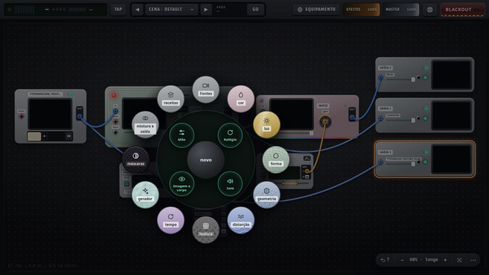
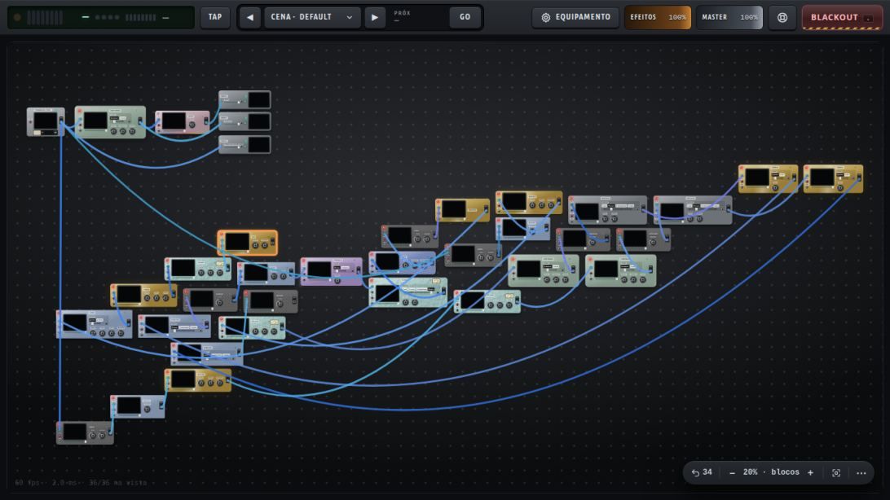
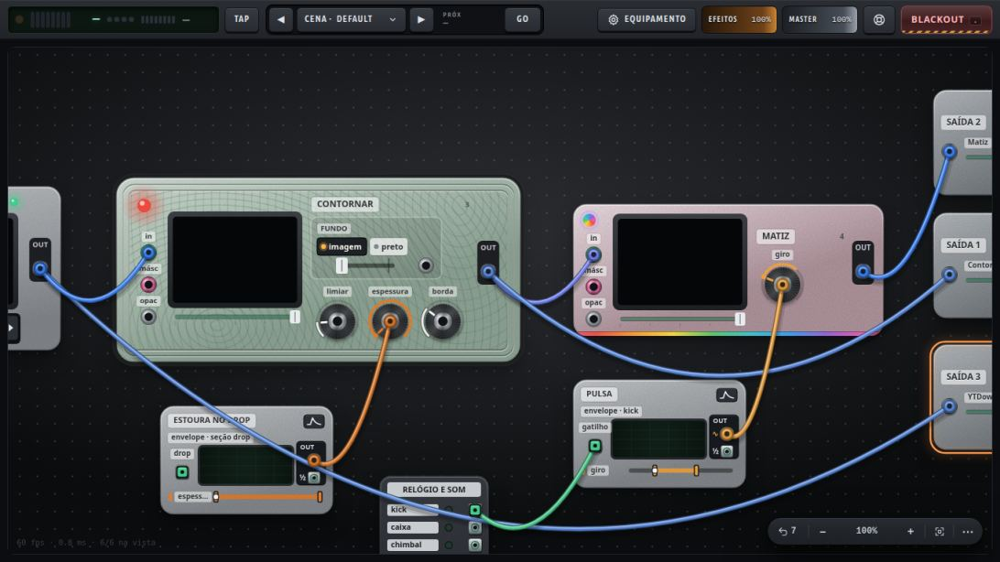
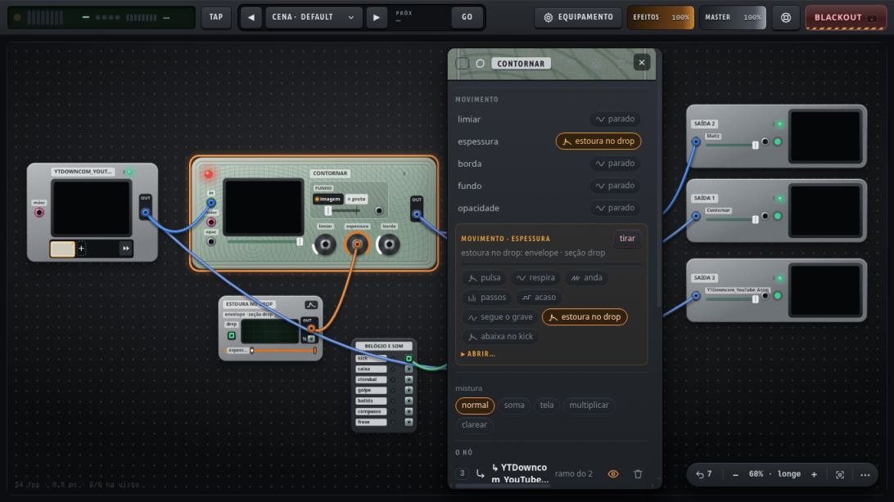
Frente 2 · A biblioteca está comprida demais
O tamanho, medido
| Roda, anel de fora | 12 fatias: Fontes 1 · cor 5 · luz 7 · forma 1 · geometria 7 · distorção 3 · textura 4 · tempo 1 · gerador 8 · máscaras 9 · mistura e saída 7 · receitas 35 |
| Roda, anel de dentro | 4 fatias: Relógio 7 · Som 11 · Imagem e corpo 4 · Mão 1 |
| Receitas | 35, das quais 18 têm UM átomo só (Brilho, Espelho, Gota, Listras, Vinheta… repetem o nome de um átomo) |
| Alteradores | 21; "segue o grave" aparece 2×; "pulsa" mora em Som |
| Equipamento › Biblioteca | 89 arquivos numa lista corrida (image.frag + 49 átomos + 39 clássicos ocultos das cenas antigas), renomear/apagar no mesmo lugar |
| Listas diferentes | 4: a roda (2 cliques no vazio / Enter), o menu do cabo no vazio (com busca, sem receitas), o "trocar" (clique no nome), a da gaveta |
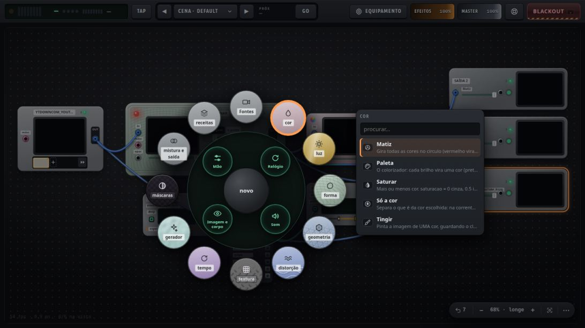
A conta: achar um módulo pelo nome pela roda = 2 cliques + adivinhar a fatia (16, e a família nem sempre é óbvia: ~1,5 tentativa) + a lista ≈ 10,6 s. Digitando (se souber que pode) ≈ 4,6 s. Busca à vista com foco ≈ 4,6 s pra todos, e com favoritos/recentes no vazio, o mais usado em 1 clique (menus divididos: 17–58% mais rápidos, Sears & Shneiderman 1994).
Frente 3 · Pixel mapping: palco, telas, telão
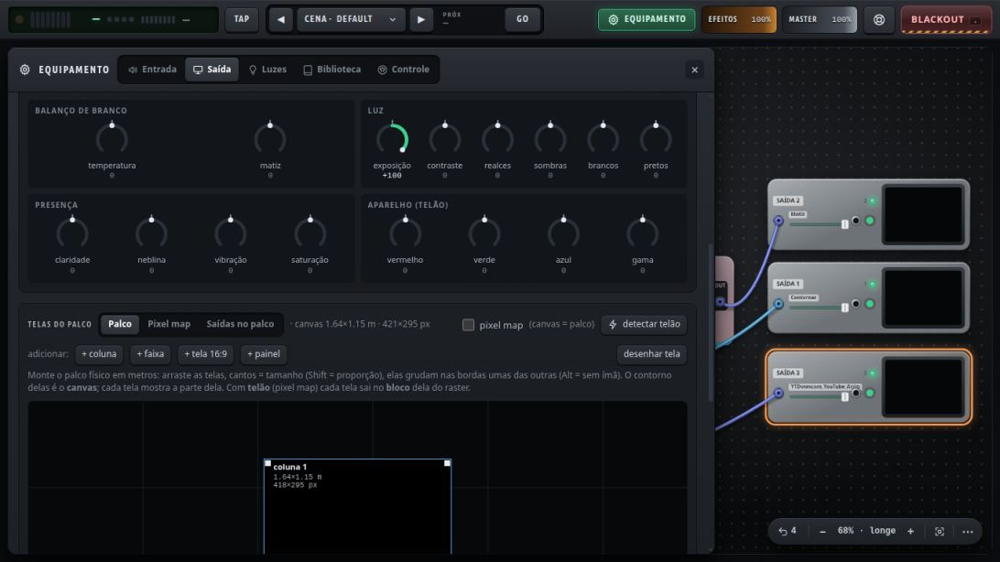
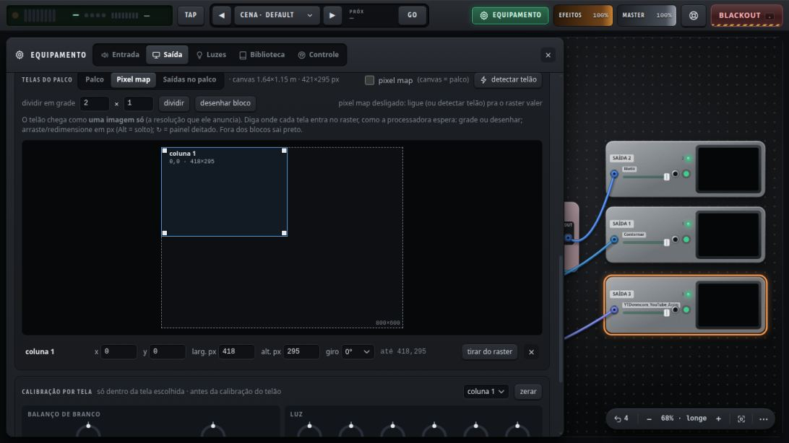
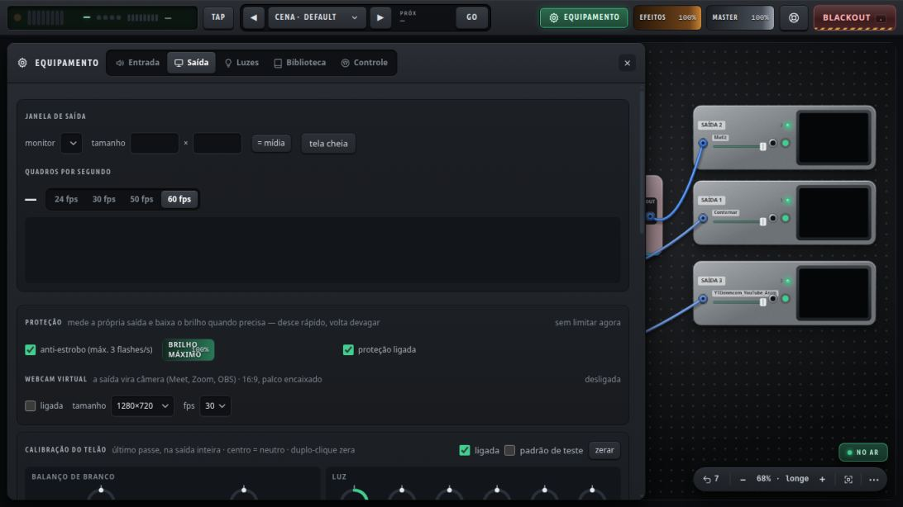
O load-in hoje, como o técnico de LED faria
Equipamento (1) → Saída (2) → rolar 2 telas até "Telas do palco" → + tela → 4 medidas em metros e o px → aba Pixel map → marcar "pixel map" → dividir em grade → conferir… no olho, pela imagem da cena. KLM ≈ — pra uma tela, e o pior: nenhuma verificação — o padrão de teste roda no canvas do palco inteiro, não por bloco, e não há "identificar" que acenda o bloco na saída real. Vocabulário do técnico (Resolume/NovaStar/Brompton): raster, slice, gabinete, test pattern, identify, preset. Nosso: tela, bloco, pixel map, canvas — dá pra manter com o termo do técnico no title.
Frente 4 · A mixagem do áudio que entra
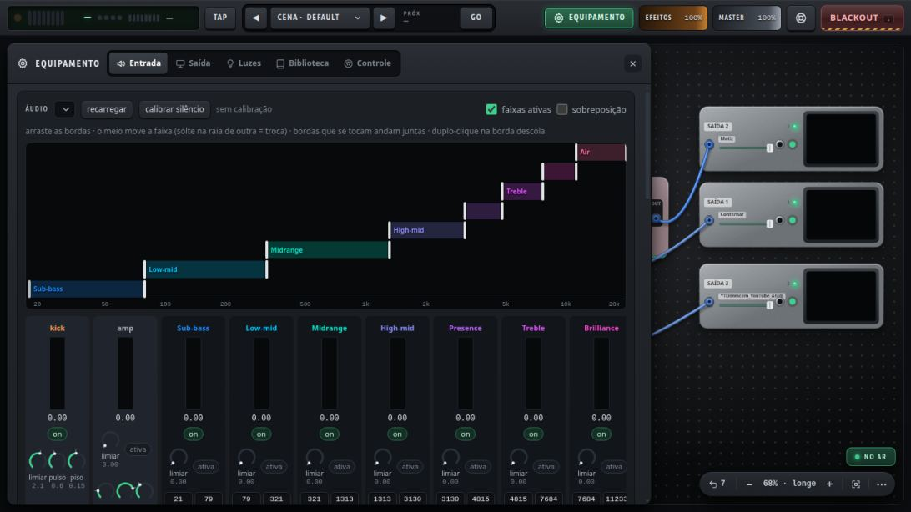
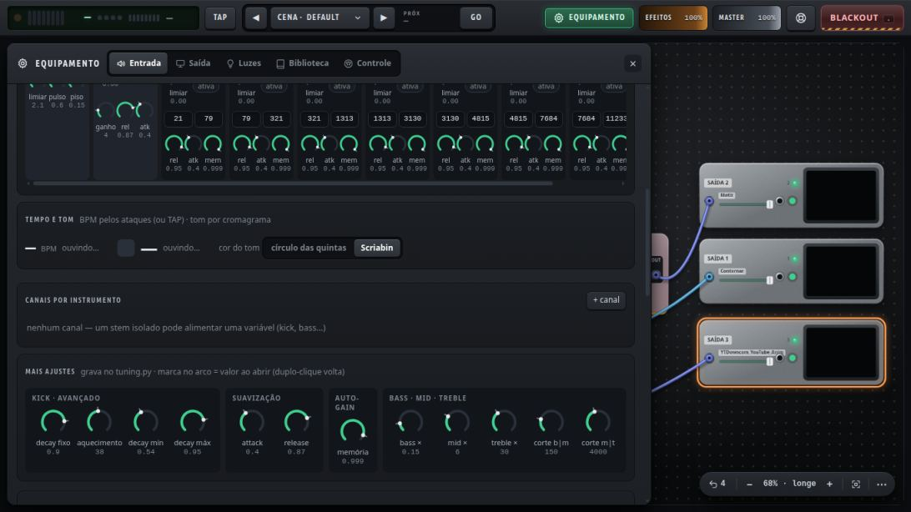
Percurso cognitivo: "a música está baixa e nada pulsa"
- Vai tentar o efeito certo? Sim: quer "mais sensível". Mas não existe "ganho de entrada" com esse nome; o ganho mora em "amp · ganho" (coluna 2) e em "AUTO-GAIN · memória".
- Vai ver a ação? Não: são 100 controles (51 knobs, 19 campos) e nenhum diz "sensibilidade".
- Vai ligar ação e efeito? Não: o medidor mostra o nível da FAIXA, não o sinal que o alterador recebe depois do limiar, ataque e soltura.
- Vai ver que andou? Só no canvas, no osciloscópio do alterador — longe dali, coberto pela gaveta (que ocupa 975 de 1366 px).
Como os outros resolvem: medidor ANTES e DEPOIS do ganho (MaestroDMX); portão de ruído antes do AGC e AGC com velocidade escolhida (WLED); 3 bandas no simples e editáveis no avançado (TouchDesigner, VDMX); valor relativo ao normal da faixa (MilkDrop); Level × Hits × Presence (Synesthesia).
Frente 5 · O framework interno de efeitos
O mapa de quem mora onde e quem chama quem. Azul = imagem, âmbar = sinal, verde = evento, cinza = gravação.
Átomo (.frag)
shaders/presets/atomos/ (49). Cabeçalho lido SÓ no Python: dash_data.parse_meta / atom_check / atom_replaces → _shader_meta → GET /shaders → o dash lê lastMeta (metaOf/knobsOf/catOf). O motor compila com ATOM_PRELUDE em layer_program.
Grafo
Cena = OVERLAYS (nós: fonte | @id | mix | out) + BINDINGS (pilha de cada nó). Native: _graph = migrate_graph + resolve_mirrors → graph_order → render_mix → run_row (mark_tex, run_state) / mix_node → SCENE_GRADE → transição → OUTPUT_GRADE → OUTPUT_MAP_SRC.
Movimento
mod[knob] = {b, lo, hi, modo, lfo, ev, env, seg, q, id, nome, mais, sinal} → _norm_mod1 (server) → _mod_total/_mod_value (native, estado em _MV) → MV_OUT → SSE mv → osciloscópio. Corpos: pilhas ~ctl, ~mao (só o JS as entende).
Eventos
audio_thread → ritmo.Tempo/Ataque → _music_events = CONTADORES (batida…frase, kick/caixa/chimbal/golpe, secao:*, pad:N, cmp:<id>) → acao → grid_q → grid_apply (thread, grava). Corpo: ~ev.
Gravação
src/tuning.py = banco: 24 chamadas de _write_atomic, blocos trocados por regex; OVERLAYS/BINDINGS repetidos dentro de SCENES. Setter = grava + patcha o módulo vivo.
Painel (dash5.html)
9 509 linhas num escopo global: decisões 1–289, CSS 290–1852, HTML 1853–2246, JS 2247–9508 (G6 = 7957–9478). graphFix = o migrador DE VERDADE (migrateGraph, normalizeNodes, flattenPosts, topoOrder, syncCtls), roda a cada SSE e grava.
tuning.py ◄─grava── dash_server (setters, _norm_overlays, _norm_mod1) ◄─POST── dash5 (graphFix, G6, gavetas)
│ patch do módulo vivo │ SSE (estado por diferença) ▲
▼ ▼ │
native_synth.main ──► _graph(migrate_graph) ──► render_mix ──► saída / telão / vcam │
▲ audio_thread → ritmo → _music_events → _mod_value → knobs ──► MV_OUT ─── SSE mv ─┘
└── acao → grid_q → dash_server.grid_apply (thread) ──► grava tuning.py ← a cada evento
Frente 6 · Limpar e organizar o código
| Pasta / arquivo | Tamanho | Veredito | Nota |
|---|
Estrutura-alvo (simples, sem quebrar o launcher)
raiz/ README · CLAUDE · INSTALAR · BACKLOG · DECISOES · requirements.txt ├── src/ Python PLANO (o launcher copia src/*.py; subpasta quebraria │ o glob, o check_imports, o CI e deixaria cópia velha na pasta de dados) │ native_synth.py main + loop GL (fica menor) │ motor_grafo.py · movimento.py · captura.py · analise_audio.py │ analise_imagem.py · saida.py ← saem do native, nomes NOVOS │ ritmo · rastreio · luzes · plat · telao_sim · matriz │ dash_server.py · dash_data.py · tuning.py (DADO: não mover) ├── painel/ index.html + css/ + js/ ← dash5.html (fase final) ├── shaders/ transitions/ models/ media/ DADO ├── packaging/ (+ dev: install.sh, watch_synth.sh) ├── tests/ tudo.sh · dash_gestos · estetica · tela_foto ├── docs/ só o que o GitHub Pages publica ├── estudo/ MAPA.md + glsl/ + sc/ └── historico/ PROMPT_*, PLANO_*, RODADA6_PROGRESSO, design/ (PNG fora do git)
O que está morto (medido)
- dash5 CSS: 472 regras sem uso ≈ 507 linhas (canvas HTML antigo
#cv .bx≈ 440,body.cel57,#cv-h,#tema-pop). - dash5 JS:
setTema,swapAtom(o CLAUDE.md ainda cita!),wireOwnerId, a 1ªfeeds(declarada 2×), ramoscel, 6closest('.bx'),renderPaletterodando escondida. - Python ≈ 300 linhas: 8 rotas de "sets" sem cliente,
/groups,_list_shaders,tuning.TELAO(52 linhas que ninguém lê),plat.data_dir. - Arquivos:
tests/v6_foto.pyewebcam.htmlquebrados,install_launcher.sh,docs/mock_v6.html,build/(536 MB), o .deb de 23/09 (27 MB), 12 PROMPT_ + 3 PLANO_ cumpridos. - NÃO morto:
flattenPosts(migra cena velha),#right/#left(guardam o monitor e as cenas),pub. Os 4 dashes velhos emdist/prisma/ainda são lidos pelo binário de 26/10: só saem depois de um build novo.
Plano em etapas (cada uma: suíte inteira verde + app entregue antes da próxima)
| Etapa | O que | Risco | Como se prova |
|---|
O resto: gavetas, MIDI, cenas, 1º minuto, erros, documentação
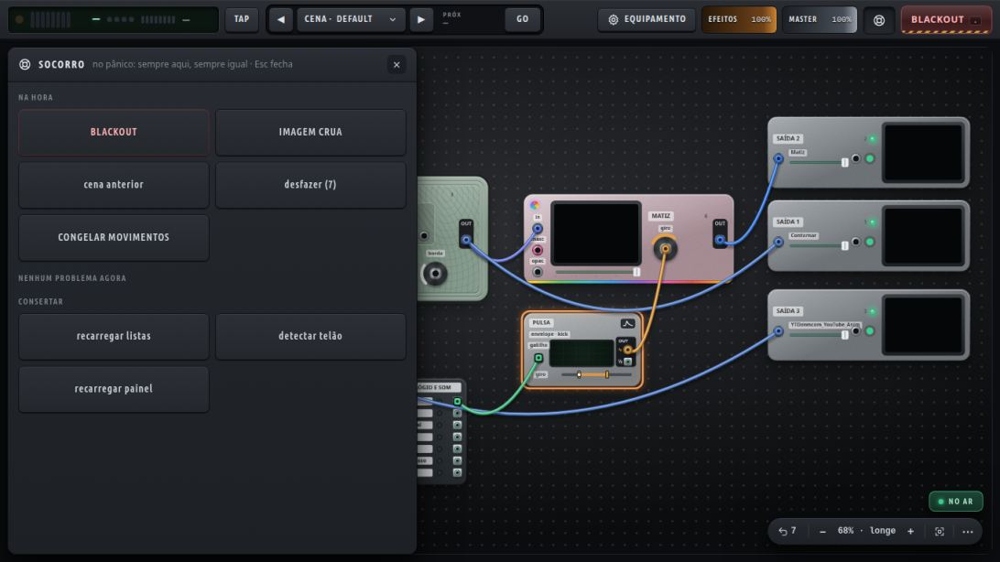
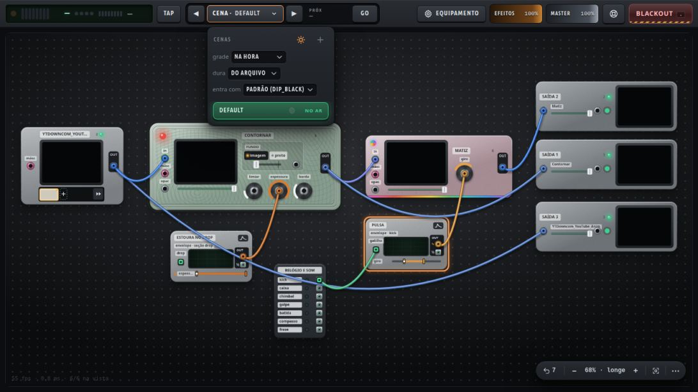
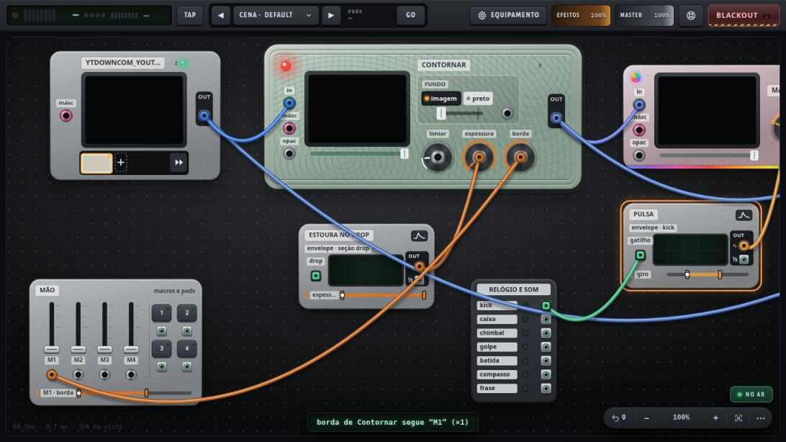
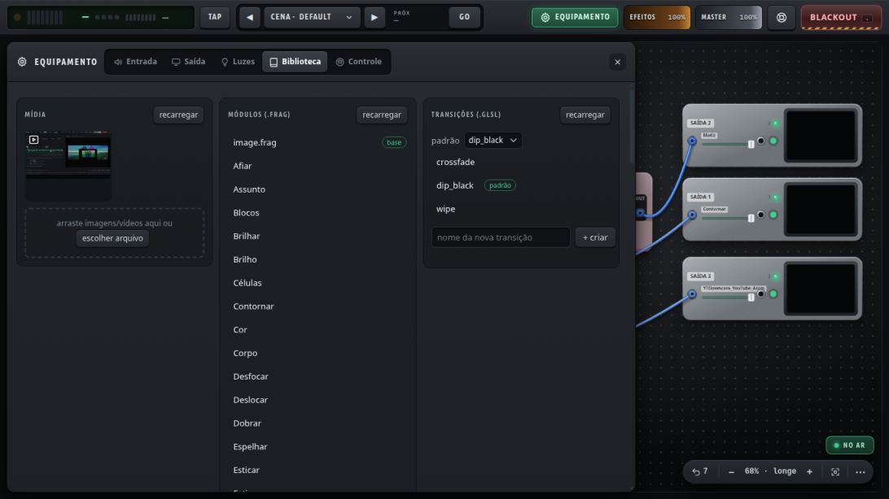
Escolhas
Cada achado acima já tem as opções embaixo dele; aqui está o resumo do que você marcou e uma nota geral. Salva sozinho (—).
| # | Achado | Sua escolha |
|---|
Nota geral
Ordem das rodadas, o que adiar, o que juntar.